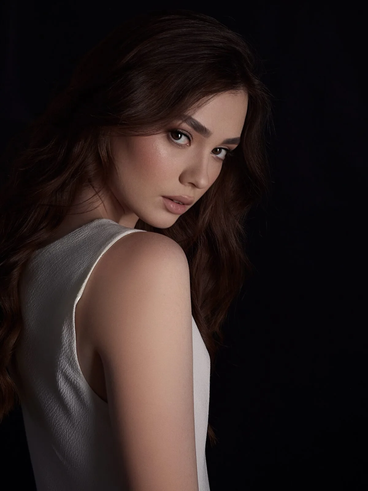
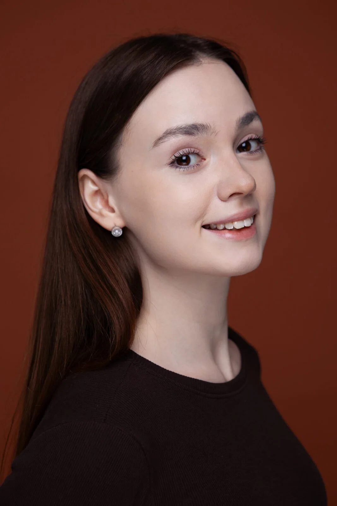
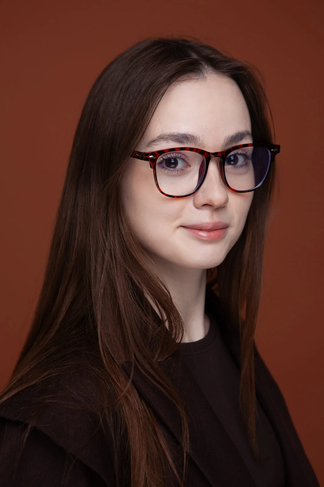
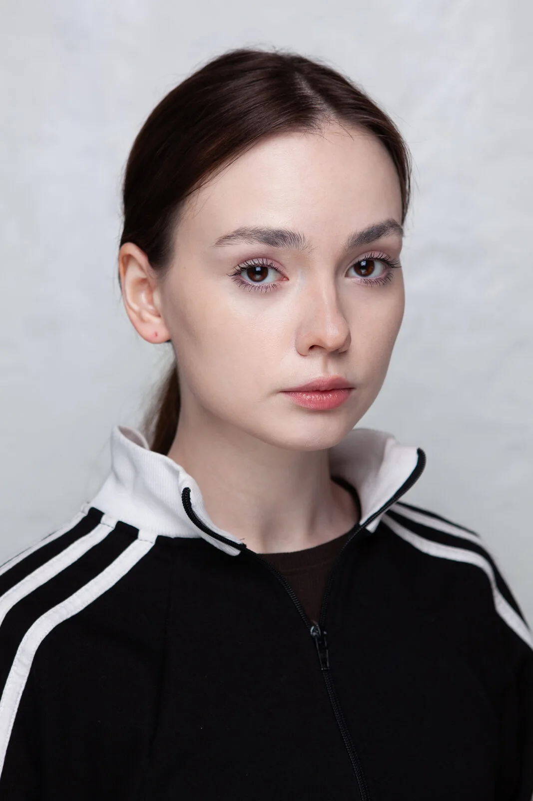
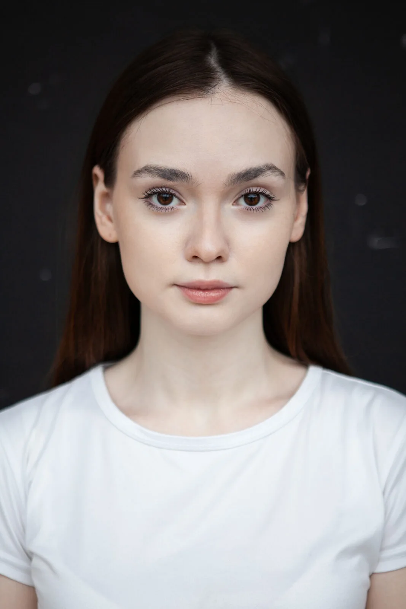
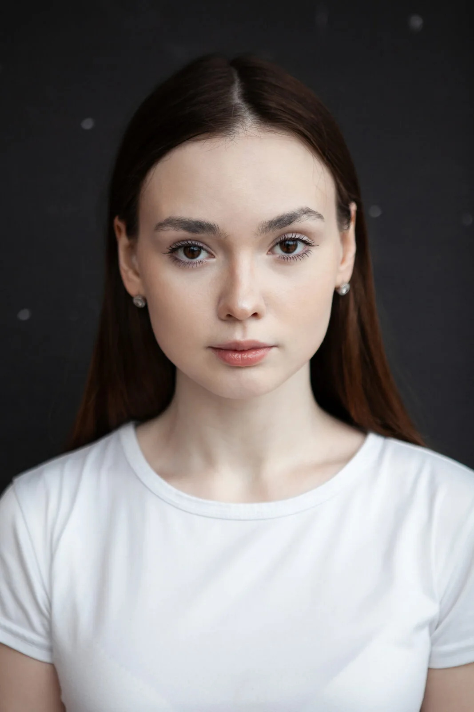
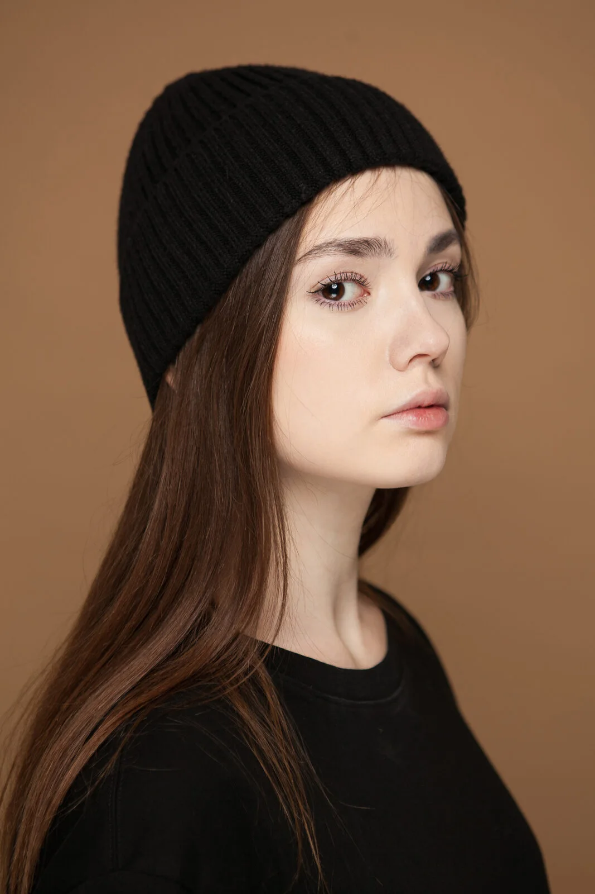
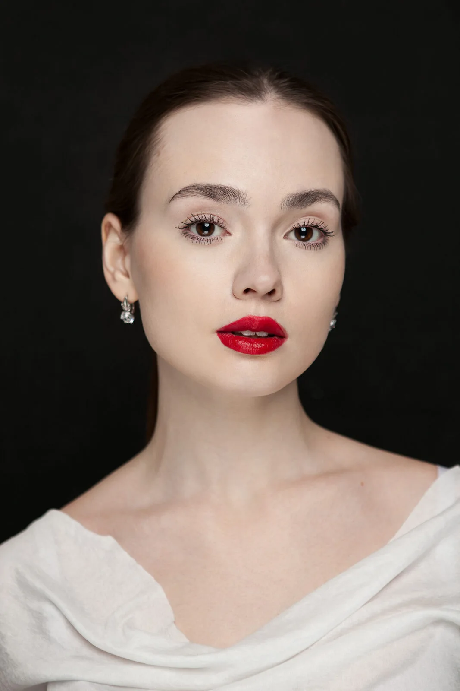

173 CM
MOSCOW
BEAUTY
EDITORIAL
FASHION
Параметры
Валерия Колягина
Москва · готова к командировкам
- Рост
- 173 см
- Вес
- 55 кг
- Волосы
- Русые, длинные
- Глаза
- Карие
- Телосложение
- Стройное
- Мерки
- 84 / 62 / 91 см *
- Обувь
- 38 EU *
- Размер одежды
- Уточняется

* Мерки и обувь: SMS Casting, уточняются.
Дата замера и дополнительные параметры — по запросу.
Комп-карта — по запросу ↗АНФАСПо запросу
ПРОФИЛЬПо запросу
ТРИ ЧЕТВЕРТИПо запросу
ПОЛНЫЙ РОСТПо запросу
Линии.
Характер.
Портрет / Fashion / Beauty


Разные кадры. Одно имя. Нажмите на фото ↗
RUNWAY
Движение.
Свет. Выход.

MONE IMPRESSION
2025
15.10.2025 / Сколково, Москва
«Романтика космоса». Финальный выход в серебряном образе.
О показе ↗


В кадре.
Выбранные фотографии


Портфолио / 01 ↗

Портфолио / 02 ↗

Портфолио / 03 ↗

Портфолио / 04 ↗

Портфолио / 05 ↗

Портфолио / 06 ↗Опыт
«Мисс Тамбовская область»
«Красота» · «Дом мод»
Роли «модель» · 2026 · в производстве
В движении
Актёрский опыт · танцы · спорт
Вокал · гитара · фортепиано
Английский · немецкий
Проекты
Бренды и кампании — по запросу.
За кадром.
Скоро: процесс съёмок.
СЪЁМКАСкоро
ПРИМЕРКАСкоро
ДЕТАЛИСкоро

08 / CONTACT
LET’S WORK
together.
Есть съёмка?
Расскажите о вашем проекте.
Условия сотрудничества — по запросу.